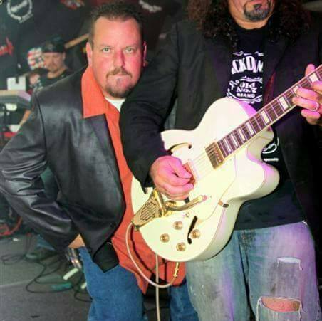

This is my father. He is in his mid-50’s and is born and raised in Massachusetts. He is a singer in band that plays mostly funk style music and he is the lead singer. For his day-to-day job, however, he is a seller of restaurant equipment. He sells and negotiates deals with various food shops and trucks around the northeastern part of the country and sells his equipment alongside his colleagues. He is the co-owner of his company and has been doing this form of work since he was a teenager. He loves working with food and his favorite meal is lasagna and beef. When he is not working on his job or singing with his band, he will usually be relaxing at home with his wife or going camping.
I chose to make this website dedicated to him because he is someone I know very well and would be able to develop a lot of content about over the course of this websites production. Also, being a relative, he is less likely to feel uncomfortable with me depicting him online to my school than say, a friend or colleague. I did receive his permission and one of the photos he took just for me to use on this website. I will document and interview various stages of his life throughout the project and see how his work in the industry is going and what kind of advice he can give to people who are interested in selling restaurant equipment.
In a Band
In addition to playing with his band, his bandmates are always there to cheer him on. There style of music is a mix of 80's and early 90's hard rock and blues music. They often play live shows around the northeast and they'll even pocket some side money based on the venue.

Singing with his Band
While playing music and singing is one his greatest passions, he also loves to cook. Italian and American food is his main specialty. While not necessarily health food, he does enjoy cooking at festivals.